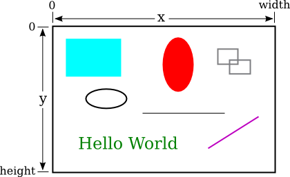
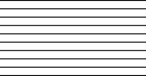
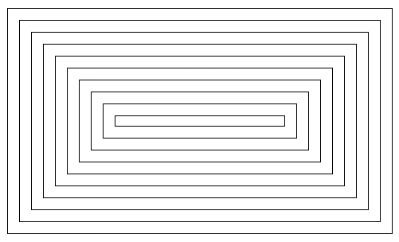

Section 3.9
Introduction to GUI Programming
For the past two chapters, you've been learning the sort of programming that is done inside a single subroutine, "programming in the small." In the rest of this book, we'll be more concerned with the larger scale structure of programs, but the material that you've already learned will be an important foundation for everything to come. In this section, we see how techniques that you have learned so far can be applied in the context of graphical user interface programming. GUI programs here, and in the rest of this book, are written using JavaFX, a collection of classes that form a "toolkit" for writing GUI programs. All of the classes mentioned in this section are part of JavaFX, and they must be imported into any program that uses them.
When you run a GUI program, it opens one or more windows on your computer screen. As a programmer, you can have complete control over what appears in the window and how the user can interact with it. For our first encounter, we look at one simple example: the ability of a program to display simple shapes like rectangles and lines in the window, with no user interaction. For now, the main point is to take a look at how programming-in-the-small can be used in other contexts besides text-based, command-line-style programs. You will see that a knowledge of programming-in-the-small applies to writing the guts of any subroutine, not just main().
3.9.1 Drawing Shapes
To understand computer graphics, you need to know a little about pixels and coordinate systems. The computer screen is made up of small squares called pixels, arranged in rows and columns, usually about 100 pixels per inch. (Many screen now have many more physical pixels per inch. On these "high-resolution" screens, a JavaFX "pixel" might refer to a physical pixel, but it is more likely to refer to a "logical pixel," which is a unit of measure somewhere close to 1/100 inch.)
The computer controls the color of the pixels, and drawing is done by changing the colors of individual pixels. Each pixel has a pair of integer coordinates, often called x and y, that specify the pixel's horizontal and vertical position. When drawing to a rectangular area on the screen, the coordinates of the pixel in the upper left corner of the rectangle are (0,0). The x coordinate increases from left to right, and the y coordinate increases from top to bottom. Shapes are specified using pixels. For example, a rectangle is specified by the x and y coordinates of its upper left corner and by its width and height measured in pixels. Here's a picture of a rectangular drawing area, showing the ranges of x and y coordinates. The "width" and "height" in this picture give the size of the drawing area, in pixels:

Assuming that the drawing area is 800-by-500 pixels, the rectangle in the upper left of the picture would have, approximately, width 200, height 150, and upper left corner at coordinates (50,50).
Drawing in Java is done using a graphics context. A graphics context is an object. As an object, it can include subroutines and data. Among the subroutines in a graphics context are routines for drawing basic shapes such as lines, rectangles, ovals, and text. (When text appears on the screen, the characters have to be drawn there by the computer, just like the computer draws any other shapes.) Among the data in a graphics context are the color and font that are currently selected for drawing. (A font determines the style and size of characters.) One other piece of data in a graphics context is the "drawing surface" on which the drawing is done. Different graphics context objects can draw to different drawing surfaces. For us, the drawing surface will be the content area of a window, not including its border or title bar.
There are two ways to draw a shape in JavaFX: You can fill the shape, meaning you can set the color of each of the pixels inside the shape. Or you can stroke the shape, meaning that you set the color of the pixels that lie along the border of the shape. Some shapes, such as a line, can only be stroked. A graphics context actually keeps track of two separate colors, one used for filling shapes and one used for stroking shapes. Stroking a shape is like dragging a pen along the border of the shape. The properties of that pen (such as its size and whether it produces a solid line or a dashed line) are properties of the graphics context.
A graphics context is represented by a variable. The type for the variable is GraphicsContext (just like the type for a string variable is String). The variable is often named g, but the name of the variable is of course up to the programmer. Here are a few of the subroutines that are available in a graphics context g. Note that all numerical parameter values can be of type double.
- g.setFill(c) is called to set the color to be used for filling shapes. The parameter, c is an object belonging to a class named Color. There are many constants representing standard colors that can be used as the parameter in this subroutine. The standard colors range from common colors such as Color.BLACK, Color.WHITE, Color.RED, Color.GREEN, Color.BLUE, and Color.YELLOW, to more exotic color names such as Color.CORNFLOWERBLUE. (Later, we will see that it is also possible to create new colors.) For example, if you want to fill shapes with red, you would say "g.setFill(Color.RED);". The specified color is used for all subsequent fill operations up until the next time g.setColor() is called. Note that previously drawn shapes are not affected!
- g.setStroke(c) is called to set the color to be used for stroking shapes. It works similarly to g.setFill.
- g.setLineWidth(w) sets the size of the pen that will be used for subsequent stroke operations, where w is measured in pixels.
- g.strokeLine(x1,y1,x2,y2) draws a line from the point with coordinates (x1,y1) to the point with coordinates (x2,y2). The width of the line is 1, unless a different line width has been set by calling g.setLineWidth(), and the color is black unless a different color has been set by calling g.setStroke().
- g.strokeRect(x,y,w,h) draws the outline of a rectangle with vertical and horizontal sides. This subroutine draws the outline of the rectangle whose top-left corner is x pixels from the left edge of the drawing area and y pixels down from the top. The horizontal width of the rectangle is w pixels, and the vertical height is h pixels. Color and line width are set by calling g.setStroke() and g.setLineWidth().
- g.fillRect(x,y,w,h) is similar to g.strokeRect() except that it fills in the inside of the rectangle instead of drawing an outline, and it uses the color set by g.setFill().
- g.strokeOval(x,y,w,h) draws the outline of an oval. The oval just fits inside the rectangle that would be drawn by g.strokeRect(x,y,w,h). To get a circle, use the same values for w and for h.
- g.fillOval(x,y,w,h) is similar to g.strokeOval() except that it fills in the inside of the oval instead of drawing an outline.
This is enough information to draw some pictures using Java graphics. To start with something simple, let's say that we want to draw a set of ten parallel lines, something like this:

Let's say that the lines are 200 pixels long and that the distance from each line to the next is 10 pixels, and let's put the start of the first line at the pixel with coordinates (100,50). To draw one line, we just have to call g.drawLine(x1,y1,x2,y2) with appropriate values for the parameters. Now, all the lines start at x-coordinate 100, so we can use the constant 100 as the value for x1. Since the lines are 200 pixels long, we can use the constant 300 as the value for x2. The y-coordinates of the lines are different, but we can see that both endpoints of a line have the same y-coordinates, so we can use a single variable as the value for y1 and for y2. Using y as the name of that variable, the command for drawing one of the lines becomes g.strokeLine(100,y,300,y). The value of y is 50 for the top line and increases by 10 each time we move down from one line to the next. We just need to make sure that y takes on the correct sequence of values. We can use a for loop that counts from 1 to 10:
int y; // y-coordinate for the line
int i; // loop control variable
y = 50; // y starts at 50 for the first line
for ( i = 1; i <= 10; i++ ) {
g.drawLine( 100, y, 300, y );
y = y + 10; // increase y by 10 before drawing the next line.
}
Alternatively, we could use y itself as the loop control variable, noting that the value of y for the last line is 140:
int y;
for ( y = 50; y <= 140; y = y + 10 )
g.drawLine( 100, y, 300, y );
If we wanted the lines to be blue, we could do that by calling g.setStroke(Color.BLUE) before drawing them. If we just draw the lines without setting the color, they will be black. If we wanted the lines to be 3 pixels wide, we could call g.setLineWidth(3) before drawing the lines.
For something a little more complicated, let's draw a large number of randomly colored, randomly positioned, filled circles. Since we only know a few colors, I will randomly select the color to be red, green, blue, or yellow. That can be done with a simple switch statement, similar to the ones in Subsection 3.6.4:
switch ( (int)(4*Math.random()) ) {
case 0:
g.setFill( Color.RED );
break;
case 1:
g.setFill( Color.GREEN );
break;
case 2:
g.setFill( Color.BLUE );
break;
case 3:
g.setFill( Color.YELLOW );
break;
}
I will choose the center points of the circles at random. Let's say that the width of the drawing area is given by a variable, width. Then we want a random value in the range 0 to width-1 for the horizontal position of the center. Similarly, the vertical position of the center will be a random value in the range 0 to height-1. That leaves the size of the circle to be determined; I will make the radius of each circle equal to 50 pixels. We can draw the circle with a statement of the form g.fillOval(x,y,w,h). However, in this command, x and y are not the coordinates of the center of the circle; they are the upper left corner of a rectangle drawn around the circle. To get values for x and y, we have to move back from the center of the circle by 50 pixels, an amount equal to the radius of the circle. The parameters w and h give the width and height of the rectangle, which have to be twice the radius, or 100 pixels in this case. Taking all this into account, here is a code segment for drawing a random circle:
centerX = (int)(width*Math.random()); centerY = (int)(height*Math.random()); g.fillOval( centerX - 50, centerY - 50, 100, 100 );
This code comes after the color-setting code given above. In the end, I found that the picture looks better if I also draw a black outline around each filled circle, so I added this code at the end:
g.setStroke( Color.BLACK ); g.strokeOval( centerX - 50, centerY - 50, 100, 100 );
Finally, to get a large number of circles, I put all of the above code into a for loop that runs for 500 executions. Here's a typical drawing from the program, shown at reduced size:

3.9.2 Drawing in a Program
Now, as you know, you can't just have a bunch of Java code standing by itself. The code has to be inside a subroutine definition that is itself inside a class definition. In fact, for my circle-drawing program, the complete subroutine for drawing the picture looks like this:
public void drawPicture(GraphicsContext g, int width, int height) {
g.setFill(Color.WHITE);
g.fillRect(0, 0, width, height); // First, fill with a background color.
// As an example, draw a large number of colored disks.
// To get a different picture, erase this code, and substitute your own.
int centerX; // The x-coord of the center of a disk.
int centerY; // The y-coord of the center of a disk.
int colorChoice; // Used to select a random color.
int count; // Loop control variable for counting disks
for (count = 0; count < 500; count++) {
centerX = (int)(width*Math.random());
centerY = (int)(height*Math.random());
colorChoice = (int)(4*Math.random());
switch (colorChoice) {
case 0:
g.setFill(Color.RED);
break;
case 1:
g.setFill(Color.GREEN);
break;
case 2:
g.setFill(Color.BLUE);
break;
case 3:
g.setFill(Color.YELLOW);
break;
}
g.fillOval( centerX - 50, centerY - 50, 100, 100 );
g.setStroke(Color.BLACK);
g.strokeOval( centerX - 50, centerY - 50, 100, 100 );
}
} // end drawPicture()
This is the first subroutine definition that you have seen, other than main(), but you will learn all about defining subroutines in the next chapter. The first line of the definition makes available certain values that are used in the subroutine: the graphics context g and the width and height of the drawing area. These values come from outside the subroutine, but the subroutine can use them. The point here is that to draw something, you just have to fill in the inside of the subroutine, just as you write a program by filling in the inside of main().
The subroutine definition still has to go inside a class that defines the program. In this case, the class is named SimpleGraphicsStarter, and the complete program is available in the sample source code file SimpleGraphicsStarter.java. You can run that program to see the drawing. You can use this sample program as a starting point for drawing your own pictures.
There's a lot in the program that you won't understand. To make your own drawing, all you have to do is erase the inside of the drawPicture() routine in the source code and substitute your own drawing code. You don't need to understand the rest.
(By the way, you might notice that the main() subroutine uses the word static in its definition, but drawPicture() does not. This has to do with the fact that drawPicture is a subroutine in an object rather than in a class. The difference between static and non-static subroutines is important but not something that we need to worry about for the time being. It will become important for us in Chapter 5.)
3.9.3 Animation
We can extend the idea of drawing pictures to making animations. A computer animation is simply a sequence of individual pictures, displayed quickly one after the other. If the change from each picture to the next is small, the user will perceive the sequence of images as a continuous animation. Each picture in the animation is called a frame. The sample program SimpleAnimationStarter.java can be used as a starting point for writing animations. It contains a subroutine named drawFrame() that draws one frame in an animation. You can create an animation by filling in the definition of this subroutine. In addition to the graphics context and the width and height of the drawing area, you can use the value of two other variables in your code: frameNumber and elapsedSeconds. The drawFrame subroutine will automatically be called about 60 times per second. The variable frameNumber takes on the values 0, 1, 2, 3, ... in successive calls to the subroutine, and the value of elapsedSeconds is the number of seconds that the animation has been running. By using either of these variables in your code, you can draw a different picture each time drawFrame() is called, and the user will see the series of pictures as an animation.
As an example of animation, we look at drawing a set of nested rectangles. The rectangles will shrink towards the center of the drawing, giving an illusion of infinite motion. One frame from the animation looks like this:

Consider how to draw a picture like this one. The rectangles can be drawn with a while loop, which draws the rectangles starting from the one on the outside and moving in. Think about what variables will be needed and how they change from one iteration of the while loop to the next. Each time through the loop, the rectangle that is drawn is smaller than the previous one and is moved down and over a bit. The difference between two rectangles is in their sizes and in the coordinates of their upper left corners. We need variables to represent the width and height of the rectangle, which I call rectWidth and rectHeight. The x and y-coordinates of the upper left corner are the same, and they can be represented by the same variable. I call that variable inset, since it is the amount by which the edges of the rectangle are inset from the edges of the drawing area. The width and height decrease from one rectangle to the next, while the inset increases. The while loop ends when either the width or the height becomes less than or equal to zero. In general outline, the algorithm for drawing one frame is
Fill the drawing area with white
Set the amount of inset for the first rectangle
Set the width and height for the first rectangle
Set the stroke color to black
while the width and height are both greater than zero:
draw a rectangle (using the g.strokeRect subroutine)
increase the inset (to move the next rectangle over and down)
decrease the width and height (to make the next rectangle smaller)
In my program, each rectangle is 15 pixels away from the rectangle that surrounds it, so the inset is increased by 15 each time through the while loop. The rectangle shrinks by 15 pixels on the left and by 15 pixels on the right, so the width of the rectangle shrinks by 30 before drawing the next rectangle. The height also shrinks by 30 pixels each time through the loop.
The pseudocode is then easy to translate into Java, except that we need to know what initial values to use for the inset, width, and height of the first rectangle. To figure that out, we have to think about the fact that the picture is animated, so that what we draw will depend in some way on the frame number. From one frame to the next frame of the animation, the top-left corner of the outer rectangle moves over and down; that is, the inset for the outer rectangle increases from one frame to the next. We can make this happen by setting the inset for frame number 0 to 0, the inset for frame number 1 to 1, and so on. But that can't go on forever, or eventually all the rectangles would disappear. In fact, when the animation gets to frame 15, a new rectangle should appear at the outside of the drawing area—but it's not really a "new rectangle," it's just that the inset for the outer rectangle goes back to zero. So, as the animation proceeds, the inset should go through the sequence of values 0, 1, 2, ..., 14 over and over. We can accomplish that very easily by setting
inset = frameNumber % 15;
Finally, note that the first rectangle fills the drawing area except for a border of size inset around the outside of the rectangle. This means that the width of the rectangle is the width of the drawing area minus two times the inset, and similarly for the height. Here, then is the drawFrame() subroutine for the moving rectangle example:
public void drawFrame(GraphicsContext g, int frameNumber,
double elapsedSeconds, int width, int height) {
g.setFill(Color.WHITE);
g.fillRect(0,0,width,height); // Fill drawing area with white.
double inset; // Gap between edges of drawing area and outer rectangle.
double rectWidth, rectHeight; // The size of one of the rectangles.
g.setStroke(Color.BLACK); // Draw the rectangle outlines in black.
inset = frameNumber % 15 + 0.5; // (The 0.5 is a technicality that gives
// a sharper picture.)
rectWidth = width - 2*inset;
rectHeight = height - 2*inset;
while (rectWidth >= 0 && rectHeight >= 0) {
g.strokeRect(inset, inset, rectWidth, rectHeight);
inset += 15; // rectangles are 15 pixels apart
rectWidth -= 30;
rectHeight -= 30;
}
}
You can find the full source code for the program is in the sample program MovingRects.java. Take a look! It's a neat effect. For another example of animation, see the sample program RandomCircles.java. That program adds one random colored disk to the picture in each frame; it illustrates the fact that the image from one frame is not automatically erased before the next frame is drawn.